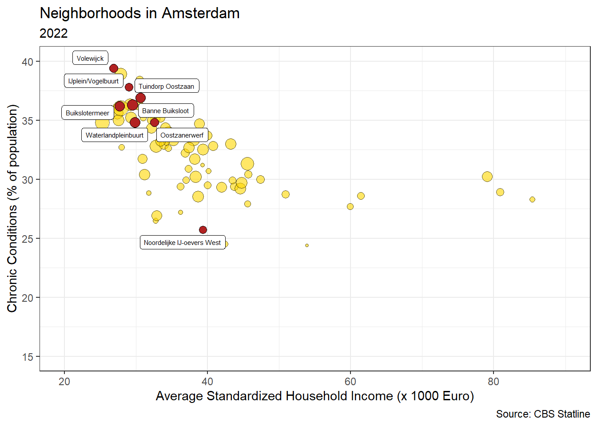
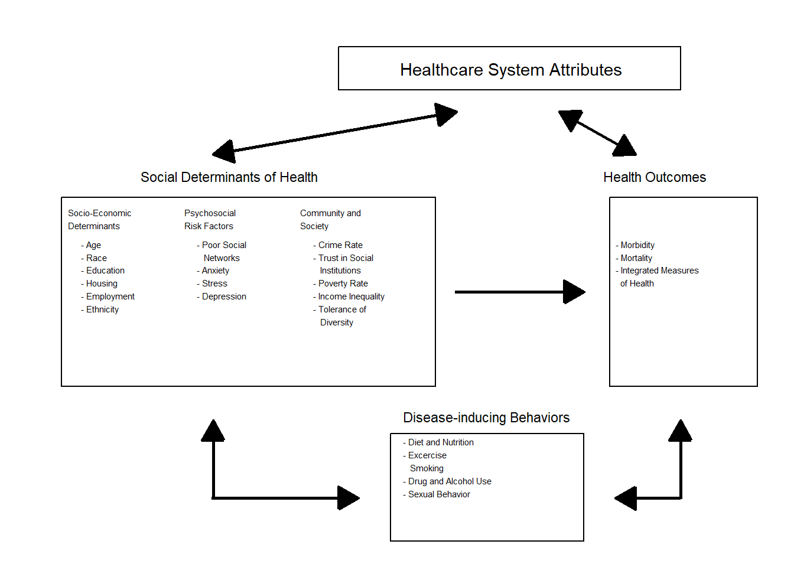

Introduction
In many countries governments, policymakers, and researchers are concerned about the rising cost of healthcare. Health spending continues to grow faster than economic growth in most countries, and this trend is projected to continue as populations age and medical innovation accelerates. The European Commission, OECD, WHO, and national advisory bodies such as the WRR in the Netherlands have all expressed concern over the long-term sustainability of healthcare systems (@europeas20212021 , @OECD_2023, @Visser_Boot_Werner_Riel_Gijsberts_2021).
Yet, rising costs are not necessarily a sign of failure. Much of this spending reflects medical progress. Advances in treatment and technology have led to significantly improved survival rates for conditions such as cancer and cardiovascular disease (@OECD_2023, @cutler2006value).
It is important, however, to assess not just how much we spend, but also how we allocate this spending. As @cutler2006value observed, while increased spending since the 1960s has often provided reasonable value, some areas, such as residential elderly care since the 1980s have seen more modest gains at increasingly higher cost. This underlines the importance of considering not only the volume of spending, but whether resources are allocated in ways that produce the best outcomes.
In my inaugural address at Tilburg University (@mikkers2016dutch), I argued that despite differences in institutional design, healthcare systems in Western countries are similar in many ways, not only in the challenges they face, such as rising costs, aging populations, and workforce pressure, but also in their overall performance. Countries with very different financing models, such as tax-funded systems and social insurance schemes, tend to show comparable trends in health spending and similar gains in life expectancy and survival.
To support this claim, I estimated a Bayesian multilevel regression model using health expenditure data from 29 OECD countries, available through the OECD Data Explorer. The model included country-specific intercepts and slopes for health spending as a share of GDP, with year (centered) as a continuous predictor. This structure allowed us to estimate both a global trend and country-level deviations. A Bayesian approach was chosen for its natural fit with hierarchical data, full uncertainty quantification, and interpretable 95% credible intervals.
To illustrate these findings, I present results for six countries that are geographically and economically close to the Netherlands, but differ in healthcare system type:
Germany and Belgium operate Bismarckian social health insurance systems with uniform benefits and centrally negotiated prices.
France combines public insurance with a mix of public and private provision.
Denmark and the United Kingdom have Beveridge-type, tax-funded systems with strong public provision.
The Netherlands, while originally Bismarckian, introduced regulated competition in 2005.
Despite institutional differences, the estimated trends in health expenditure were remarkably similar. The global average increase in health spending was estimated at 0.10 percentage points per year (95% CrI: 0.08, 0.12). Country-specific trends were clustered closely around this global mean: the Netherlands (0.128), Belgium (0.135), Germany (0.104), France (0.102), and Denmark (0.096). The United Kingdom was the exception, with a steeper trend of 0.181 (95% CrI: 0.152, 0.211). These results suggest that despite different organizational models, long-term health spending trajectories, and by implication, some aspects of performance, are quite similar across countries.
These findings are visualized in the figure below, where the observed and predicted health expenditures (with 95% credible intervals) are plotted for each country.
Yet the financial burden is only part of the picture. A more pressing issue stems from demographic change. While healthcare costs have long been the focus of reform debates, the real bottleneck of the future is likely to be workforce capacity.
As seen in the graph below, the age distribution of the Dutch population has shifted significantly over time. In 1950, 60.2% of the population was of working age (18–67), while just 5.7% was 67 or older. By 2005, the working-age group had increased slightly to 66.5%, with the elderly population doubling to 11.5%. In 2025, projections show 64.6% working age and 17.1% aged 67 or older. Looking ahead to 2070, the working-age share is expected to fall further to 59.5%, while the proportion of people aged 67 and above will rise to 22.7%.

This rising dependency ratio means fewer working people supporting a growing population of elderly citizens, many of whom will need increasingly complex care. If current trends continue, a disproportionate share of the workforce would be required in healthcare simply to sustain current service levels. This is not financially, politically, or socially sustainable.
To better understand this evolution, it is helpful to apply the lens of @cutler2002, who described healthcare reforms as evolving in three broad phases. These phases are clearly visible in the Dutch context (see e.g. @schut2003zorg).
Access Expansion (roughly 1945–1980 in the Netherlands): In the decades following the Second World War, the main focus was to increase access to healthcare. Hospitals were expanded, insurance coverage was broadened, and the foundations of the modern welfare state were established. The priority was equity: ensuring that everyone could receive care when needed.
Cost Containment (roughly 1980–2000): Rising healthcare expenditures led to a shift in focus. The oil shocks and financial crises of the late 1970s and early 1980s led to budgetary concerns. Policymakers introduced price regulation, budget ceilings, and efficiency incentives. In this phase, a predecessor of my former employer, the Dutch Healthcare Authority, was created to regulate the health care sector. The measures were effective in curbing spending growth, but came at a cost: waiting lists lengthened, and public satisfaction declined.
Incentives and Market Mechanisms (2000s onward): In response to the shortcomings of the cost-containment phase, a third wave of reform started in 2005: the Netherlands introduced regulated competition, insurer choice, and performance-based payment mechanisms. The goal was to improve process efficiency, in other words, to do things right.
Each phase reflected the priorities of its time: from equity to sustainability to efficiency.
But it is worth asking: was it a coincidence that we introduced competition and choice-based systems in 2005, just when the ratio of working-age people to older citizens was at its most favorable? Labor was still abundant, and a model based on patient choice and provider competition was feasible.
Today, that context is changing rapidly. The real question going forward is not just how (cost) efficiently we can deliver care, but what care we deliver, where, and to whom. The focus is shifting from process efficiency to allocative efficiency: from doing things right to doing the right things.
There is good reason to believe we are not allocating our healthcare resources to the right places. As the @OECD_2023 puts it:
“Unhealthy lifestyles and poor environments cause millions of people to die prematurely. Smoking, harmful alcohol use, physical inactivity and obesity are the root cause of many chronic conditions.”
In other words, many of our most pressing health problems do not originate in hospitals or GP practices, but in daily life. This point is illustrated in new research using Dutch administrative data. @danesh2024 show that health inequality in the Netherlands begins early: by age 35, individuals in the bottom half of the income distribution already carry the same chronic disease burden as 50-year-olds in the top half. This is not just the result of reverse causality (i.e., sicker people earning less), but primarily due to faster health deterioration among low-income individuals. The researchers conclude that socioeconomic and geographic factors, not individual behavior alone, account for most of the difference.
This pattern is also visible at the local level. The figure below plots average income against the prevalence of chronic conditions for neighborhoods in Amsterdam. It shows a clear picture: wealthier areas tend to have lower rates of chronic disease. Neighborhoods in Amsterdam-Noord, highlighted in red, illustrate how certain areas consistently perform worse across both dimensions: suggesting social disparities that cannot be explained by healthcare access alone.

Initiatives such as Beter Samen in Noord seek to address this challenge in practice. By initiating collaboration between healthcare providers, social workers, and community organizations, they aim to reduce health inequalities by intervening earlier and closer to the root causes. This means supporting people not only when they are sick, but also by shaping the environments in which they live, work, and grow up.
A useful visual model based on @ansari2003public -shown below- illustrates this multi-level framework1. It highlights how health outcomes are shaped by a wide range of factors, including socioeconomic position, psychosocial stressors, and broader community characteristics, not just individual behavior or the quality of healthcare services.
1 Over the last decades, a growing amount of research suggests that medical care is not the sole determinant of health outcomes. Rather, social determinants of health (SDH) play a large role in shaping health outcomes [@braveman2014social]. The WHO defines SDH as “the conditions in which people are born, grow, live, work, and age, and the fundamental drivers of these conditions” [@marmot2008closing]. This summary is based on research assistance by Finn Mikkers.

This text presents a framework for rethinking healthcare under these conditions. It builds on the field of health systems engineering, which views healthcare as a complex, decentralized system of interdependent actors. In the chapters that follow, I explore the need for improved coordination (Chapter 2), better-aligned payment schemes (Chapter 3), and the consequences for our Dutch healthcare system (Chapter 4).